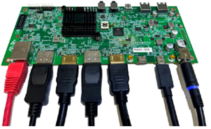
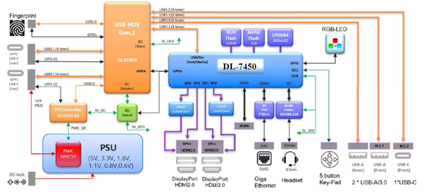
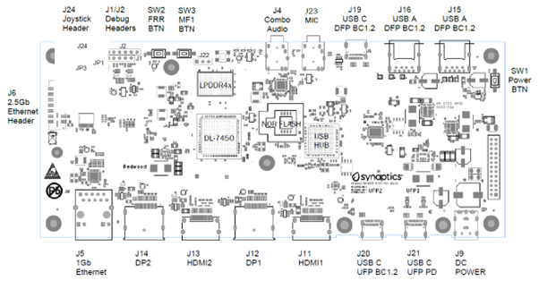

Introducing the DL-7450
Synaptics is expanding its architecture by offering reference platform designs through a Software Development Kit (SDK), allowing partners to customize software features and applications using a growing Application Programming Interface (API). The API classes and methods will grant access to various components of the DL-7450 silicon, enabling customer code to run on dedicated processors via a Python virtual machine. Over time, additional APIs will become available, providing broader access to different parts of the platform, and offering more customized control for designing future products.
The Synaptics SDK will equip developers with a comprehensive set of tools, libraries, and documentation to create applications for specific platforms or software frameworks. It offers the essential resources and guidelines needed to build applications efficiently and effectively, streamlining the development process with pre-built components and sample code that can be easily integrated. This approach allows developers to focus on the core logic of their applications without having to reinvent common features.
Included in the SDK are debugging tools and testing frameworks to help developers identify and resolve issues swiftly. By providing access to third-party services and APIs, the SDK helps developers enhance the functionality of their software without the need to build and maintain these features independently. This essential tool simplifies the development process, ensuring compatibility and consistency, while offering access to valuable third-party services.
Using the SDK, developers can save time, reduce errors, and create high-quality applications that meet platform or framework standards and requirements. This efficiency enables them to address customer needs more effectively and differentiate their platforms in the market.
Included in the box
Reference DL-7450 board and corresponding daughter cards
AC power adapter (USB Power Delivery)
USB-C cable (USB-C plugs on both ends)
AC plug adapter (IET Type A receptacle / Type C plug, used only if applicable)
Additional items needed
Display monitors with HDMI / DP ports
Up to 4 monitors can be supported from a single reference board
A HDMI cable (standard HDMI Type A plugs on both ends)
Ethernet Cat 5/6/6e RJ.45 connected cable
Note: Ethernet or network connection is not needed for the initial boot.
Initial connections
The below graphic shows a typical connection to a host device with 2 x 4K DisplayPort monitors, 2 x 4K HDMI monitors and Gigabit Ethernet interface. Power for the reference design is provided by an external AC/DC power supply.
Our DisplayLink technology makes it simple to connect any display to any computer that supports USB or Wi-Fi and provides universal solutions for a range of corporate, home and embedded applications where easy connectivity of displays enhances productivity. With DisplayLink, expanding your visual workspace has never been easier or more affordable. Our technology makes it really easy to connect any display to any computer. We call this Plug and Display. To get the latest version of host software please visit our download area.
Setting up the hardware
The assembled reference design, DL-7450-Redwood Quad Video IoT dock, or just Redwood includes a 2.5GbE PHY daughter board (plugged into J6) and a Joystick.

The reference design is provided as a functional demonstrator of the DL-7450 SoC implemented in an IoT quad video (2 x DisplayPort and 2 x HDMI) dock design. The design is intended to be refined at a future date by ODM partners. The evaluation-ready kit enables easy and rapid prototyping for the Synaptics DL-7450 processor. This page lists the simple steps to power on and boot up the system.
The following graphic shows the board connectors, switches and jumpers.
 Board Connectivity
The reference design supports the following connections:
Display Ports – J12, J14
The reference design supports two DisplayPort interfaces DP1 and DP3. Both ports are connected the same.
J12 – DL-7450 DisplayPort 1
J14 – DL-7450 DisplayPort 3 (Provides Display Stream Compression (DSC) Support)
HDMI Ports – J11, J13
The reference design supports two HDMI Port interfaces using DP0 and DP2 up to HDMI2.0 Mode. Both ports are connected the same.
J11 – DL-7450 HDMI 1 using DisplayPort 0 (In HDMI Mode)
J13 – DL-7450 HDMI 2 using DisplayPort 2 (In HDMI Mode)
USB Ports – J15, J16, J19, J20, J21
The Redwood incorporates a USB3.2 Gen2 hub with USB power delivery (PD) support.
J15 – USB 3.2 Gen 1 USB-A Downstream facing port
J16 – USB 3.2 Gen 1 USB-A Downstream facing port
J19 – USB 3.2 Gen 2 USB-C Downstream facing port
J20 – USB 3.2 Gen 2 USB-C Upstream facing port
J21 – USB 3.2 Gen 2 USB-C Upstream facing port with USB power delivery (PD) support.
As J20 and J21 are both upstream facing ports only one port shall be connected to a host at any one time. LED7 (J21) and LED8 (J20) indicate which port is active.
DC Power Input – J9
The J9 DC power input is used to provide power to the Redwood, the interface connector is a 7.5mm/5mm DC jack.
Power Interface Control Port – J10
The J10 port is designed to support an external daughter board providing PSID support. This feature is currently unsupported by the reference design.
3.5mm Audio Jack – J4
The DL-7450- Redwood quad video IOT Dock reference design incorporates a 3.5mm audio jack integrated with an I2S audio CODEC supporting a stereo headset with microphone.
3.5mm Microphone Audio Jack – J23
The DL-7450- Redwood quad video IOT Dock reference design also incorporates a selectable 3.5mm audio jack integrated with an I2S audio CODEC supporting a stereo microphone only. (Not currently supported by firmware)
Fingerprint Module Connector – J7
The DL-7450- Redwood quad video IOT Dock reference design has been designed to support an optional Synaptics FS76xx fingerprint sensor module. This feature is currently unsupported by the reference design.
RJ-45 10/100/1000 Ethernet – J5
A MotorComm YT8531C PHY has been provided to support 10/100/1000 Ethernet speeds via a RJ-45 connector. LEDs in the RJ-45 connector provide link and activity information. Link LED - Yellow LED to indicate that there is an active connection on the Ethernet port. Speed/Activity LED
The speed/activity LED blink when there is Ethernet activity, the link speed is indicated as follows:
10Mb Link Amber
100Mb Link Amber
1000Mb Link Green
2.5Gb Ethernet Interface – J6
When IOT functionality is required then the 2.5Gb Ethernet adapter must be used. The Redwood reference design provides support for a daughter board used to support a 2.5G Ethernet. PHY (The Maxlinear GPY211). The daughter board is interfaced via a mezzanine connector J6. Contact.
Debug Connector – J1
Debug connector J1 provides I2C and UART0 TX signals for debugging activities.
PIN
Connectivity
Notes
1
DL_SCL0
DL-7450 I2C Clock, 10K pullup to +5V0 Power Plane
2
DL_SDA0
DL-7450 I2C Data, 10K pullup to +5V0 Power Plane
3
5V_SYS
Direct connection to +5V0 Power Plane
4
DLUART_TXD
DL-7450 UART0 TXD -3V3 signal
5
GND
Direct Connection to GND plane